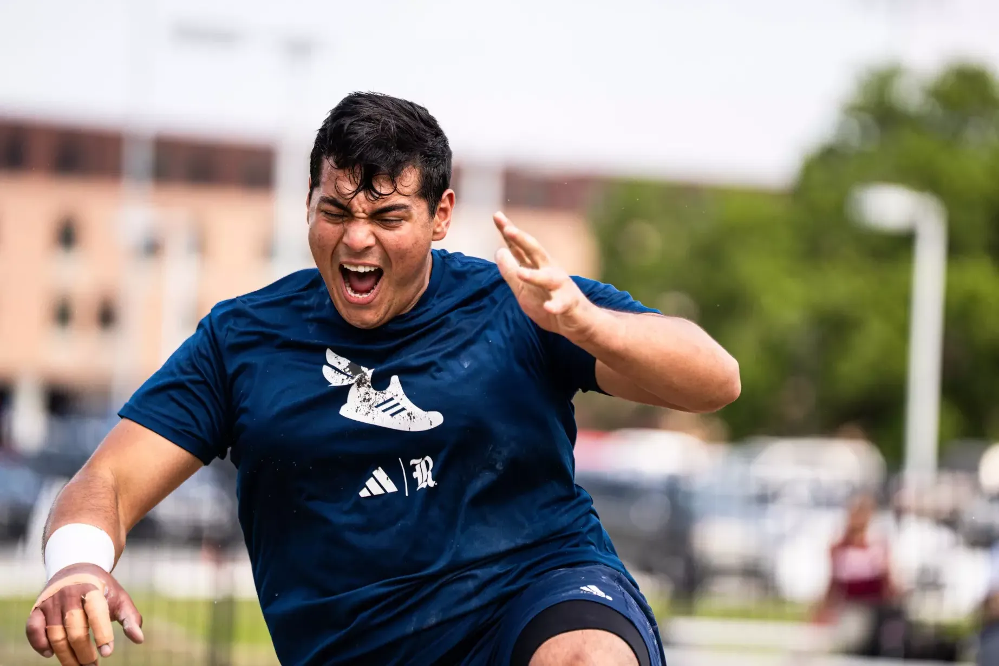
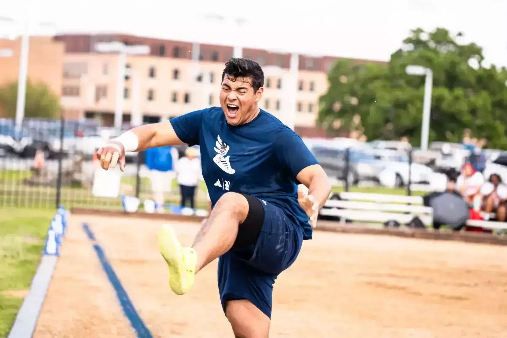
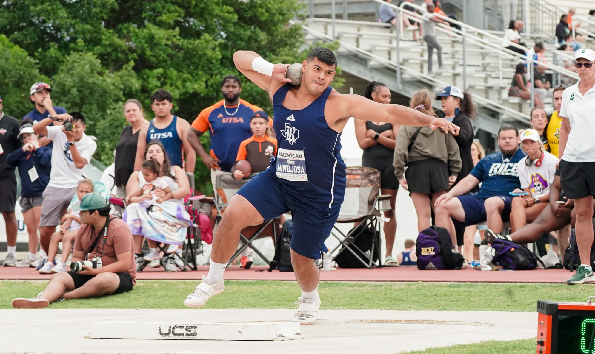
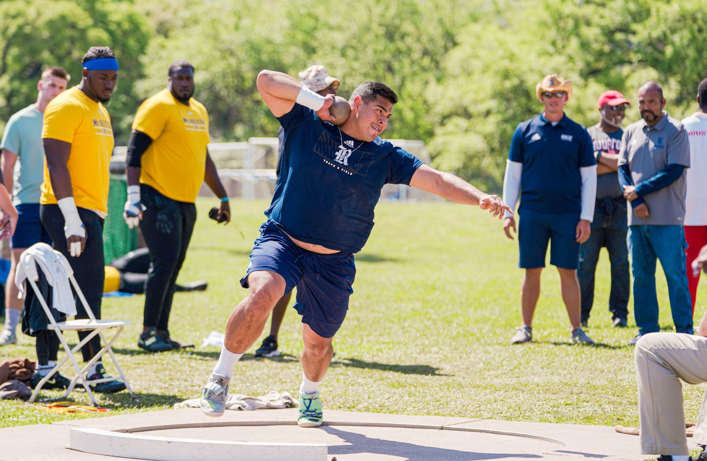

Engineering education
Rice University
Bachelor of Science in Mechanical Engineering · Mechanics/Dynamics Specialization · May 2025
A rigorous engineering foundation in mechanics, dynamics, analysis, design, and systems thinking—paired with the responsibility of training and competing at the NCAA Division I level.
Student-athlete
Rice Track & Field
Five seasons in the throws program, balancing engineering coursework with year-round training and championship competition.
Shot Put & DiscusRice Men’s Track & Field
24 PointsConference championship team points
All-Academic2024–25 American Conference



